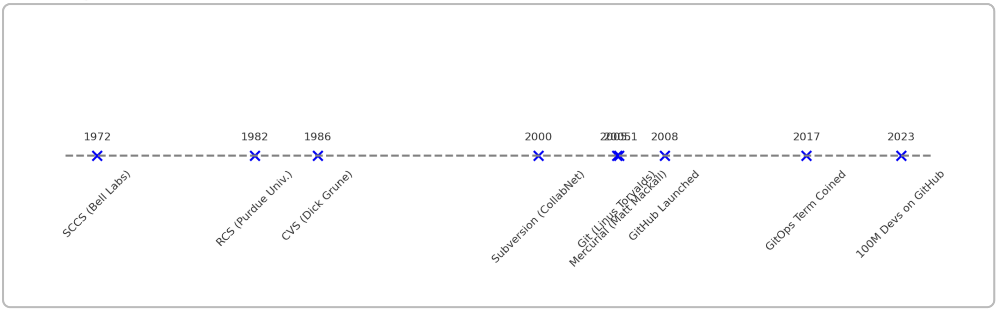

[
Main page, Key milestones, or trends.
]
Key moments and milestones in VCS history
A timeline of events:
-
In 1972, SCCS (Source Code Control System) was released by Bell Labs as the first version tracker for IBM mainframe software.
-
In 1982, Purdue University's Walter Tichy released RCS (Revision Control System), introducing delta storage and per-file version tracking.
-
1986 brought us CVS (Concurrent Versions System), as a front-end for RCS with extra features. It became the standard for 90s open-source and small commercial projects.
-
With the turn of the millenium (2000), SVN (Subversion) came. It expanded on CVS with atomic commits, improvements to file rename handling, and network operations.
-
In 2005 Git and Mercurial were released simultaneously by Linus Torvalds and Matt Mackall respectively. Git was created after Linux's VCS license was revoked. Both are DVCSes (Distributed Version Control Systems), meaning everyone has a copy of the repo.
-
GitHub released in 2008 as a web-based client for Git. It helped accelerate the adoption of Git by including things like issue-reporting and more social features.
-
During the late 2010s, the phrase GitOps was coined by Weaveworks. In that same timeframe, CI/CD (Continuous Integration/Continuous Delivery) pipelines were popularized.
-
With the 2020s, AI integration in most programs, including VCSes, skyrocketed. GitHub introduced Copilot, an AI assistant that helps with coding and Git usage. GitHub also reported crossing the 100 million user mark.

Benefits of DVCS over CVCS:
- DVCS allows for offline work compared to CVCS that needs to contact the server.
- Every clone of a repo in a DVCS system acts as a redundant copy, improving resiliency with added users.
- Branching, forking, merging, pulling is improved significantly.
- Works for any workflow: open-source, commercial, enterprise, etc.